湖南省2023年普通高中学业水平选择性考试 物理
注意事项：1．答卷前，考生务必将自己的姓名、准考证号填写在本试卷和答题卡上。2．回答选择题时，选出每小题答案后，用铅笔把答题卡上对应题目的答案标号涂黑。如需改动，用橡皮擦干净后，再选涂其他答案标号。回答非选择题时，将答案写在答题卡上。写在本试卷上无效。3．考试结束后，将本试卷和答题卡一并交回。
本卷第1—15题均为必考题，满分100分。本册收录全部题目、选项、原图与小问。
相关题目：第 1 题
本题共6小题，每小题4分，共24分。在每小题给出的四个选项中，只有一项是符合题目要求的。
相关题目：第 1 题 · 第 2 题 · 第 3 题 · 第 4 题 · 第 5 题 · 第 6 题
返回原卷说明与本册范围 返回一、选择题（24分）
题目与已知条件
2023年4月13日，中国“人造太阳”反应堆中科院环流器装置（EAST）创下新纪录，实现403秒稳态长脉冲高约束模等离子体运行，为可控核聚变的最终实现又向前迈出了重要的一步，下列关于核反应的说法正确的是（ ）
A.相同质量的核燃料，轻核聚变比重核裂变释放的核能更多
B.氘氚核聚变的核反应方程为
查看原题图／原始配图
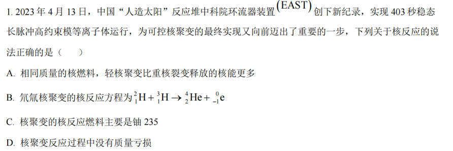
原始配图 1 · 原题及原图所用高中知识
聚变与裂变；质量数、电荷数守恒；质量亏损。
读题与思路
用守恒量直接检查核方程，并区分聚变和裂变燃料。
分步解析
- 典型轻核聚变按单位质量燃料释放的核能多于重核裂变，A正确。聚变是轻核结合，裂变是重核分裂。
- 氘氚聚变应为²₁H+³₁H→⁴₂He+¹₀n。左边质量数为5、电荷数为2，除氦核外还应有质量数1、电荷数0的中子，B写电子不守恒。
- 铀235是常见裂变燃料，而非本题所述聚变的主要燃料，C错误。聚变放出的能量对应静质量亏损ΔE=Δmc²，D错误。
检查与易错点
核子总数守恒与静质量亏损可以同时成立；不能把质量数和质量混同。
本题来源：paper · cross · drive-ref-1
返回一、选择题（24分）
题目与已知条件
如图(a)，我国某些农村地区人们用手抛撒谷粒进行水稻播种。某次抛出的谷粒中有两颗的运动轨迹如图(b)所示，其轨迹在同一竖直平面内，抛出点均为 ，且轨迹交于 点，抛出时谷粒1和谷粒2的初速度分别为 和 ，其中 方向水平， 方向斜向上。忽略空气阻力，关于两谷粒在空中的运动，下列说法正确的是（ ）
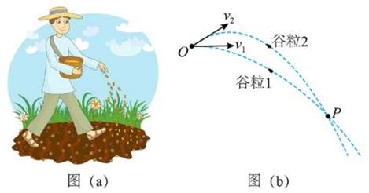
图(a)抛撒谷粒；图(b)两谷粒原轨迹，保留O、P及v₁、v₂方向。查看原题图／原始配图
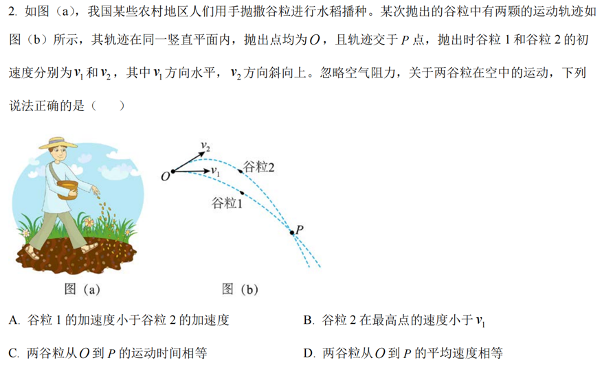
原始配图 1 · 原题及原图读题与思路
两颗谷粒从同一O点到同一P点，位移相同，但向上初速度会延长下落到P所需时间。
分步解析
- 两颗谷粒只受重力，加速度都为g，A错误。设O到P竖直向下距离h，谷粒1满足h=gt₁²/2；谷粒2竖直初速度向上w>0，满足h=−wt₂+gt₂²/2，故t₂>t₁。
- 水平位移同为x，谷粒1水平速度v₁=x/t₁，谷粒2水平速度v₂x=x/t₂，所以v₂x<v₁。谷粒2最高点竖直速度为0，其速率就是v₂x，B正确。
- 由于t₂>t₁，C错误。平均速度等于位移除以时间，两者位移相同、时间不同，平均速度大小也不同，D错误。
检查与易错点
最高点加速度仍为g，仅竖直速度瞬时为零；平均速度不能用两个端点瞬时速度的平均来替代。
本题来源：paper · cross · drive-ref-1
返回一、选择题（24分）
题目与已知条件
如图(a)，在均匀介质中有A、B、C和D四点，其中A、B、C三点位于同一直线上，，， 垂直 。 时，位于A、B、C处的三个完全相同的横波波源同时开始振动，振动图像均如图(b)所示，振动方向与平面 垂直，已知波长为4 m。下列说法正确的是（ ）
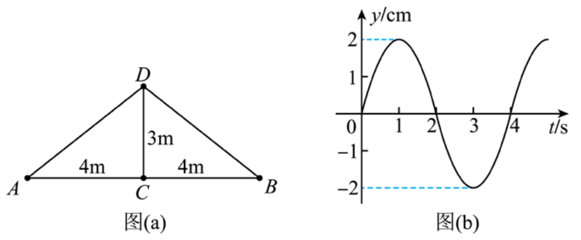
图(a)AC=BC=4 m、DC=3 m；图(b)三波源共同振动图，振幅2 cm、周期4 s，原曲线与刻度保留。B. 时，D处的质点开始振动
C. 时，D处的质点向 轴负方向运动
D. 时，D处的质点与平衡位置的距离是6 cm
查看原题图／原始配图
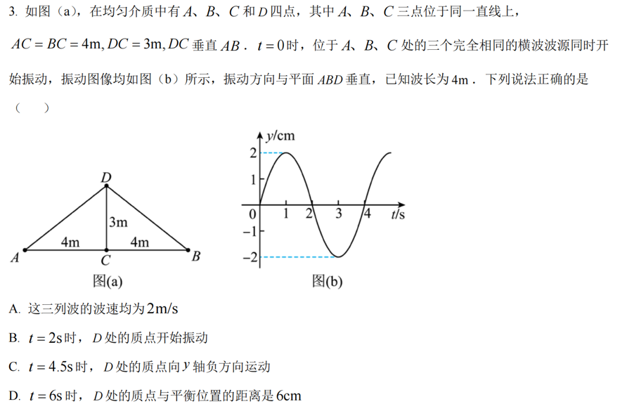
原始配图 1 · 原题及原图读题与思路
先判断各列波何时到D，再只叠加已经到达的波，不能提前让三个波源同时作用。
分步解析
- 图像给周期T=4 s，已知λ=4 m，波速u=λ/T=1 m/s，A错误。DC=3 m，所以C的波3 s才到D，t=2 s尚未起振，B错误。
- 由直角三角形AD=BD=√(4²+3²)=5 m，A、B两列波到达D需5 s。t=4.5 s时仅C波到达，D相当于波源振动了1.5 s；图中1.5 s位移正在减小，速度沿y负向，C正确。
- t=6 s时C波对应源时刻3 s，位移−2 cm；A、B波均对应源时刻1 s，各位移+2 cm。总位移为−2+2+2=+2 cm，距平衡位置2 cm，D的6 cm错误。
检查与易错点
叠加的是带符号的位移，不是振幅的绝对值。共同的振动图并不意味各位置同时同相。
本题来源：paper · cross · drive-ref-1
返回一、选择题（24分）
题目与已知条件
根据宇宙大爆炸理论，密度较大区域的物质在万有引力作用下，不断聚集可能形成恒星。恒星最终的归宿与其质量有关，如果质量为太阳质量的1～8倍将坍缩成白矮星，质量为太阳质量的10～20倍将坍缩成中子星，质量更大的恒星将坍缩成黑洞。设恒星坍缩前后可看成质量均匀分布的球体，质量不变，体积缩小，自转变快。不考虑恒星与其它物体的相互作用。已知逃逸速度为第一宇宙速度的 倍，中子星密度大于白矮星。根据万有引力理论，下列说法正确的是（ ）
查看原题图／原始配图
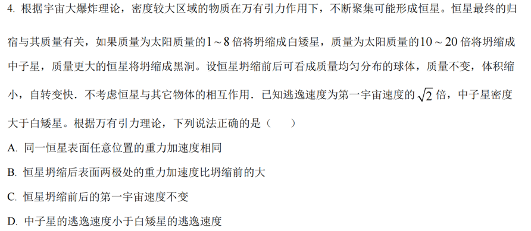
原始配图 1 · 原题及原图所用高中知识
万有引力；自转；第一宇宙速度；密度与半径关系。
读题与思路
极点不需要自转向心加速度，是比较表面重力的干净位置。
分步解析
- 同一恒星不同纬度自转所需向心加速度不同，通常测得的有效重力加速度并不处处相同，A错误。
- 两极自转半径为零，g极=GM/R²。坍缩质量M不变、半径R减小，两极重力加速度增加，B正确。
- 第一宇宙速度v₁=√(GM/R)，坍缩后R减小使v₁变大，C错误。
- 逃逸速度v₂=√(2GM/R)。由M=4πρR³/3得v₂与M1/3ρ1/6成正比。题给中子星对应较大质量区间且密度更大，其逃逸速度比白矮星大，D错误。
检查与易错点
第一宇宙速度描述近表面绕行，不是恒星自转表面速度。比较D还必须使用题干给定的质量区间，不能只记“密度越大”。
本题来源：paper · cross · drive-ref-1
返回一、选择题（24分）
题目与已知条件
如图，真空中有三个点电荷固定在同一直线上，电荷量分别为 、 和 ，P点和三个点电荷的连线与点电荷所在直线的夹角分别为90°、60°和30°。若P点处的电场强度为零，，则三个点电荷的电荷量可能为（ ）
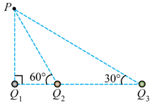
原三点电荷位置图：PQ₁垂直底线，PQ₂/PQ₃与底线夹角分别为60°/30°。A.
B.
C.
D.
查看原题图／原始配图
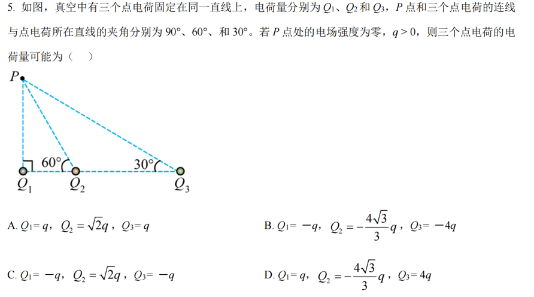
原始配图 1 · 原题及原图读题与思路
先把距离转成同一个基本长度，再分别检查水平与竖直分量，避免只比较三个场强的大小。
分步解析
- 设PQ₁=r，则PQ₂=r/sin60°=2r/√3，PQ₃=r/sin30°=2r。各点电荷在P处的场强都沿相应连线。
- 选项A三个电荷均正，竖直向上分量不能抵消；B三个电荷均负，竖直向下分量不能抵消，两者排除。
- Q₁只提供竖直场强，Q₂、Q₃的水平分量必须先抵消。这要求二者异号且|Q₂|/|Q₃|=1/√3。C给√2与1，不符合，排除。
- D中设基本场强E₀=kq/r²。Q₁场强分量为(0,E₀)；Q₃=4q的分量为(−√3E₀/2,E₀/2)；Q₂=−4√3q/3的场强大小√3E₀，分量为(√3E₀/2,−3E₀/2)。横纵分量相加都为0。
检查与易错点
电荷的符号决定场强沿连线哪一向。取比例时还要除以距离平方，不能直接把三个电荷量当作三个场强。
本题来源：paper · cross · drive-ref-1
返回一、选择题（24分）
题目与已知条件
如图，真空中有区域Ⅰ和Ⅱ，区域Ⅰ中存在匀强电场和匀强磁场，电场方向竖直向下（与纸面平行），磁场方向垂直纸面向里，等腰直角三角形 区域（区域Ⅱ）内存在匀强磁场，磁场方向垂直纸面向外。图中A、C、O三点在同一直线上， 与 垂直，且与电场和磁场方向均垂直。A点处的粒子源持续将比荷一定但速率不同的粒子射入区域Ⅰ中，只有沿直线 运动的粒子才能进入区域Ⅱ。若区域Ⅰ中电场强度大小为 、磁感应强度大小为 ，区域Ⅱ中磁感应强度大小为 ，则粒子从 的中点射出，它们在区域Ⅱ中运动的时间为 。若改变电场或磁场强弱，能进入区域Ⅱ中的粒子在区域Ⅱ中运动的时间为 ，不计粒子的重力及粒子之间的相互作用，下列说法正确的是（ ）
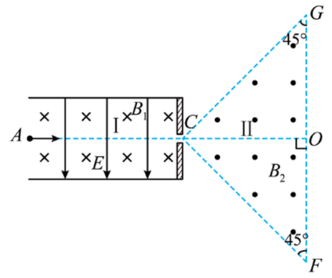
原速度选择器与等腰直角三角形磁场区，G、F处均为45°。A.若仅将区域Ⅰ中磁感应强度大小变为 ，则
B.若仅将区域Ⅰ中电场强度大小变为 ，则
C.若仅将区域Ⅱ中磁感应强度大小变为 ，则
D.若仅将区域Ⅱ中磁感应强度大小变为 ，则
查看原题图／原始配图
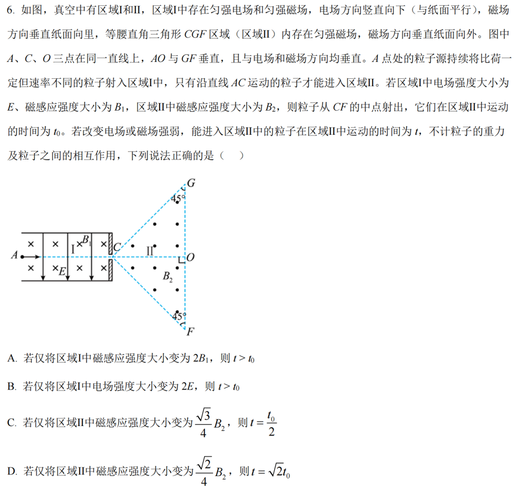
原始配图 1 · 原题及原图所用高中知识
电磁场平衡；洛伦兹力圆周运动；边界几何；弧长时间。
读题与思路
区域Ⅰ决定入射速度，区域Ⅱ决定轨道半径与转角。时间随磁场变化不仅由周期决定，还要看粒子从哪条边出场。
分步解析
- 区域Ⅰ沿AC直行时qE=qvB₁，故v=E/B₁。设CO=d。区域Ⅱ正粒子进入后向下偏转，从CF中点出场的轨道半径r₀=d/2、转角90°，所以t₀=πm/(2qB₂)。
- 仅将B₁加倍，入射速度减半，区域Ⅱ轨道半径减半，但仍从CF出场，转角仍90°，时间仍为t₀，A错误。仅将E加倍，速度和半径都加倍，轨迹恰从F出场，仍转90°，时间仍为t₀，B错误。
- 仅将区域Ⅱ磁场变为fB₂，速率不变，半径r=r₀/f=d/(2f)。当f<1/2时，粒子先碰到竖直边OF。用圆半径与水平位移关系d=r sinφ，得到sinφ=2f。
- C中f=√3/4，φ=60°=π/3。运动时间t=φm/(qfB₂)，故t/t₀=2φ/(πf)=8√3/9，并非1/2。
- D中f=√2/4，φ=45°=π/4，故t/t₀=2φ/(πf)=√2，D正确。
检查与易错点
原选项D的磁场系数是√2/4。某参考解析正文曾误写√2/2，不能据错误正文改原题。角度代入t=φm/(qB)时用弧度。
本题来源：paper · cross · drive-ref-1
本题共4小题，每小题5分，共20分。在每小题给出的四个选项中，有多项符合题目要求。全部选对的得5分，选对但不全的得3分，有选错的得0分。
相关题目：第 7 题 · 第 8 题 · 第 9 题 · 第 10 题
返回二、选择题（20分）
题目与已知条件
一位潜水爱好者在水下活动时，利用激光器向岸上救援人员发射激光信号，设激光光束与水面的夹角为 ，如图所示。他发现只有当 大于41°时，岸上救援人员才能收到他发出的激光光束，下列说法正确的是（ ）
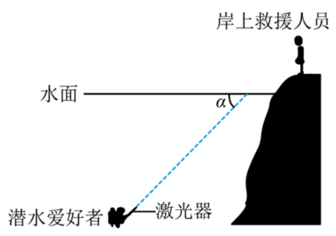
原水面、岸上救援人员与潜水者位置图；α为光束与水面的夹角。A.水的折射率为
B.水的折射率为
C.当他以 向水面发射激光时，岸上救援人员接收激光光束的方向与水面夹角小于60°
D.当他以 向水面发射激光时，岸上救援人员接收激光光束的方向与水面夹角大于60°
查看原题图／原始配图
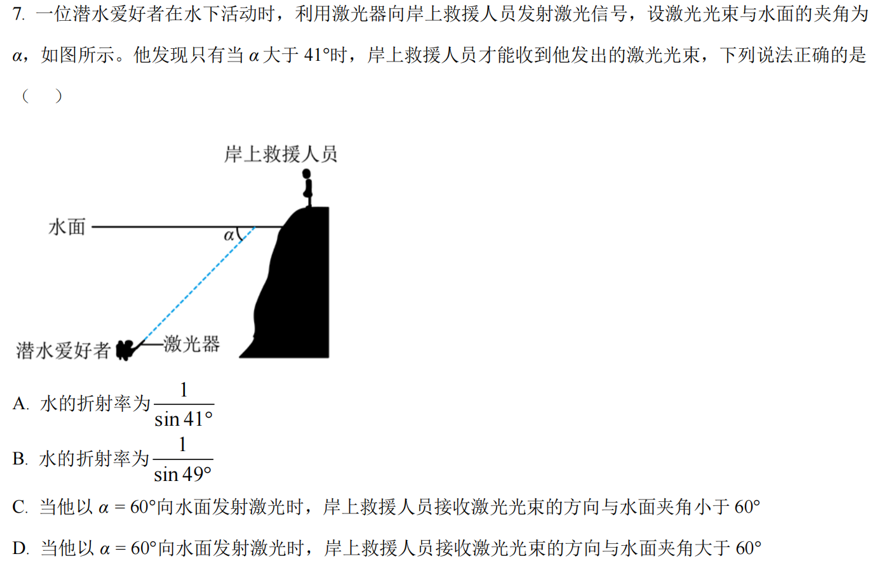
原始配图 1 · 原题及原图所用高中知识
折射定律；临界角；界面夹角与法线夹角。
读题与思路
题中α是与水面的夹角，入射角应换成90°−α。
分步解析
- 只有α>41°才能射出水面，边界对应临界入射角C=90°−41°=49°。由sin C=1/n得n=1/sin49°，B正确、A错误。
- α=60°时入射角i=30°。水中射向空气，折射光远离法线，折射角r>i=30°。
- 出射光与水面的夹角为90°−r<60°，所以C正确、D错误。
检查与易错点
临界角是相对于法线。临界时出射光掠射；入射角超过临界角才完全不能从界面射出。
本题来源：paper · cross · drive-ref-1
返回二、选择题（20分）
题目与已知条件
如图，固定在竖直面内的光滑轨道 由直线段 和圆弧段 组成，两段相切于B点， 段与水平面夹角为 ， 段圆心为O，最高点为C，A与C的高度差等于圆弧轨道的直径 。小球从A点以初速度 冲上轨道，能沿轨道运动恰好到达C点，下列说法正确的是（ ）
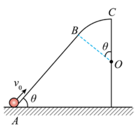
原斜直轨道AB与外侧圆弧BC相切图，保留O、θ及初速度方向。C.小球的初速度
D.若小球初速度 增大，小球有可能从B点脱离轨道
查看原题图／原始配图
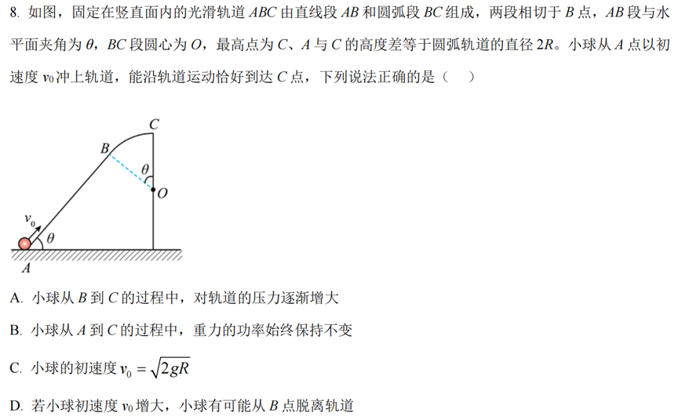
原始配图 1 · 原题及原图所用高中知识
机械能守恒；径向牛顿第二定律；接触条件。
读题与思路
小球在圆弧外侧，向心合力等于重力径向分量减去支持力，符号与内侧圆轨道相反。
分步解析
- “恰好到达C”表示到C速度为0。从A到C升高2R，机械能守恒mv₀²/2=mg·2R，得v₀=√(4gR)，C选项错误。
- 设圆弧上某点半径与竖直方向夹角α，C处α=0。该点比C低R(1−cosα)，所以v²=2gR(1−cosα)。
- 指向圆心列方程mg cosα−N=mv²/R，得到N=3mg cosα−2mg。从B到C，α减小、cosα增加，N增加，小球对轨道压力也增加，A正确。
- 直线AB上重力功率PG=−mgv sinθ，随速度变化，不是恒定，B错误。若增大初速度，B处速度增大，N=mg cosθ−mvB²/R可能降到0，小球可从B离开轨道，D正确。
检查与易错点
压力不能为负。一旦按圆周公式算出N<0，说明要求轨道拉住小球，而外侧轨道做不到，实际会脱离。
本题来源：paper · cross · drive-ref-1
返回二、选择题（20分）
题目与已知条件
某同学自制了一个手摇交流发电机，如图所示。大轮与小轮通过皮带传动（皮带不打滑），半径之比为4∶1，小轮与线圈固定在同一转轴上。线圈是由漆包线绕制而成的边长为 的正方形，共 匝，总阻值为 。磁体间磁场可视为磁感应强度大小为 的匀强磁场。大轮以角速度 匀速转动，带动小轮及线圈绕转轴转动，转轴与磁场方向垂直。线圈通过导线、滑环和电刷连接一个阻值恒为 的灯泡。假设发电时灯泡能发光且工作在额定电压以内，下列说法正确的是（ ）
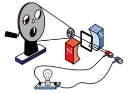
原手摇交流发电机示意图，含大小轮、皮带、线圈、磁极和灯泡。B.灯泡两端电压有效值为
C.若用总长为原来两倍的相同漆包线重新绕制成边长仍为 的多匝正方形线圈，则灯泡两端电压有效值为
查看原题图／原始配图
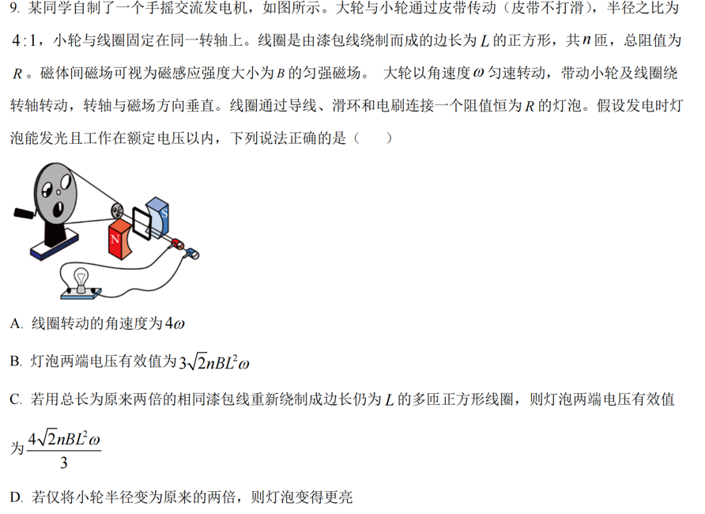
原始配图 1 · 原题及原图所用高中知识
皮带传动；交流电动势有效值；内外电阻分压。
读题与思路
先求线圈实际角速度；增加导线长度时匝数和内阻会同时变化。
分步解析
- 皮带不打滑，两轮边缘线速度相同。大、小半径比4:1，线圈与小轮同轴，所以线圈角速度为4ω，A正确。
- 线圈面积L²，电动势峰值ℰm=nBL²·4ω，有效值ℰ=ℰm/√2=2√2nBL²ω。线圈内阻与灯泡电阻均为R，灯泡电压为ℰ/2=√2nBL²ω，B错误。
- 相同导线长度加倍、边长不变，匝数变为2n，内阻变为2R，电动势有效值变为4√2nBL²ω。灯泡分压U=ℰ′R/(2R+R)=4√2nBL²ω/3，C正确。
- 小轮半径加倍而大轮角速度不变，小轮角速度减半，电动势降低，灯泡功率降低而变暗，D错误。
检查与易错点
公式nBSω中的ω必须是线圈角速度。外电路电压不等于发电机的电动势，尤其本题明确给出线圈总电阻。
本题来源：paper · cross · drive-ref-1
返回二、选择题（20分）
题目与已知条件
如图，光滑水平地面上有一质量为 的小车在水平推力 的作用下加速运动。车厢内有质量均为 的A、B两小球，两球用轻杆相连，A球靠在光滑左壁上，B球处在车厢水平底面上，且与底面的动摩擦因数为 ，杆与竖直方向的夹角为 ，杆与车厢始终保持相对静止。假设最大静摩擦力等于滑动摩擦力。下列说法正确的是（ ）
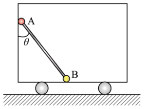
原小车、A/B小球与轻杆示意图，θ为杆与竖直壁夹角。A.若B球受到的摩擦力为零，则
B.若推力 向左，且 ，则 的最大值为
C.若推力 向左，且 ，则 的最大值为
D.若推力 向右，且 ，则 的范围为
查看原题图／原始配图
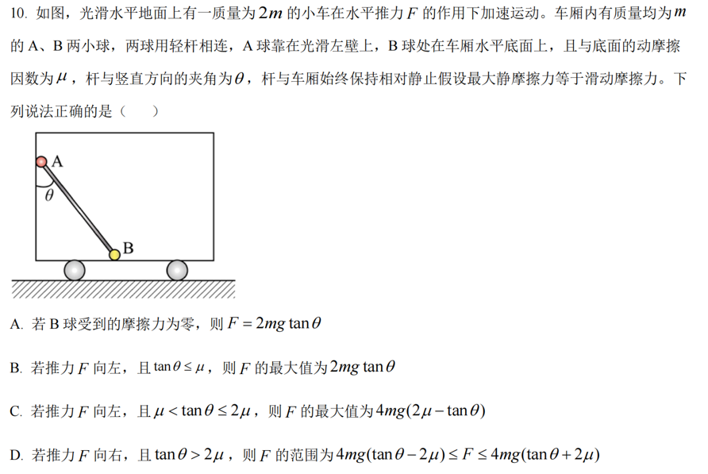
原始配图 1 · 原题及原图所用高中知识
整体牛顿第二定律；静摩擦力范围；单侧接触约束。
读题与思路
用向右为正的统一加速度a，把墙面支持力非负与B球静摩擦范围同时列出。
分步解析
- 系统总质量2m+m+m=4m，外力有向值F=4ma。A球竖直平衡使杆竖直分力为mg，因此杆水平分力大小为mg tanθ。
- A受杆力向左，墙面支持力向右，N墙−mg tanθ=ma。因N墙≥0，得a≥−g tanθ。
- B球受杆竖直向下力mg，加自身重力mg，地板支持力N=2mg。水平上mg tanθ+f=ma，所以f=m(a−g tanθ)，静摩擦要求|a−g tanθ|≤2μg。
- 若f=0，则a=g tanθ，F=4mg tanθ，A选项的2mg tanθ错误。若向左且tanθ≤μ，墙面约束更严格，|a|最大g tanθ，F最大4mg tanθ，B错误。
- 若向左且μ<tanθ≤2μ，摩擦约束更严格，a最小g(tanθ−2μ)，向左F最大4mg(2μ−tanθ)，C正确。若向右且tanθ>2μ，允许g(tanθ−2μ)≤a≤g(tanθ+2μ)，乘4m即D所给区间，D正确。
检查与易错点
静摩擦力不是永远等于μN；只有范围边界才取最大值。墙只能推不能拉，所以N墙≥0不可省略。
本题来源：paper · cross · drive-ref-1
本题共5小题，共56分。第11—15题均须作答。
所获原卷题图未列第11—15题各题分值，本册保留已知节分值，不另行推定单题分值。
相关题目：第 11 题 · 第 12 题 · 第 13 题 · 第 14 题 · 第 15 题
返回三、非选择题（56分）
题目与已知条件
某同学探究弹簧振子振动周期与质量的关系，实验装置如图(a)所示，轻质弹簧上端悬挂在铁架台上，下端挂有钩码，钩码下表面吸附一个小磁铁，其正下方放置智能手机，手机中的磁传感器可以采集磁感应强度实时变化的数据并输出图像，实验步骤如下：
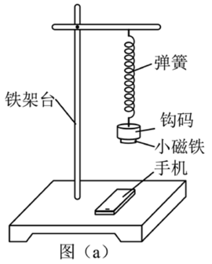
图(a)原弹簧振子实验装置，标有铁架台、弹簧、钩码、小磁铁和手机。（1）测出钩码和小磁铁的总质量 ；
（2）在弹簧下端挂上该钩码和小磁铁，使弹簧振子在竖直方向做简谐运动，打开手机的磁传感器软件，此时磁传感器记录的磁感应强度变化周期等于弹簧振子振动周期；
（3）某次采集到的磁感应强度 的大小随时间 变化的图像如图(b)所示，从图中可以算出弹簧振子振动周期 ＝______（用“”表示）；
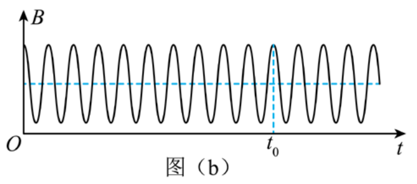
图(b)原B-t采样曲线，保留从原点至t₀之间的完整周期数量与端点位置。（4）改变钩码质量，重复上述步骤；
（5）实验测得数据如下表所示，分析数据可知，弹簧振子振动周期的平方与质量的关系是______（填“线性的”或“非线性的”）；
| | | |
|---|
| 0.015 | 2.43 | 0.243 | 0.059 |
| 0.025 | 3.14 | 0.314 | 0.099 |
| 0.035 | 3.72 | 0.372 | 0.138 |
| 0.045 | 4.22 | 0.422 | 0.178 |
| 0.055 | 4.66 | 0.466 | 0.217 |
（6）设弹簧的劲度系数为 ，根据实验结果并结合物理量的单位关系，弹簧振子振动周期的表达式可能是______（填正确答案标号）；
（7）除偶然误差外，写出一条本实验中可能产生误差的原因：______。
查看原题图／原始配图
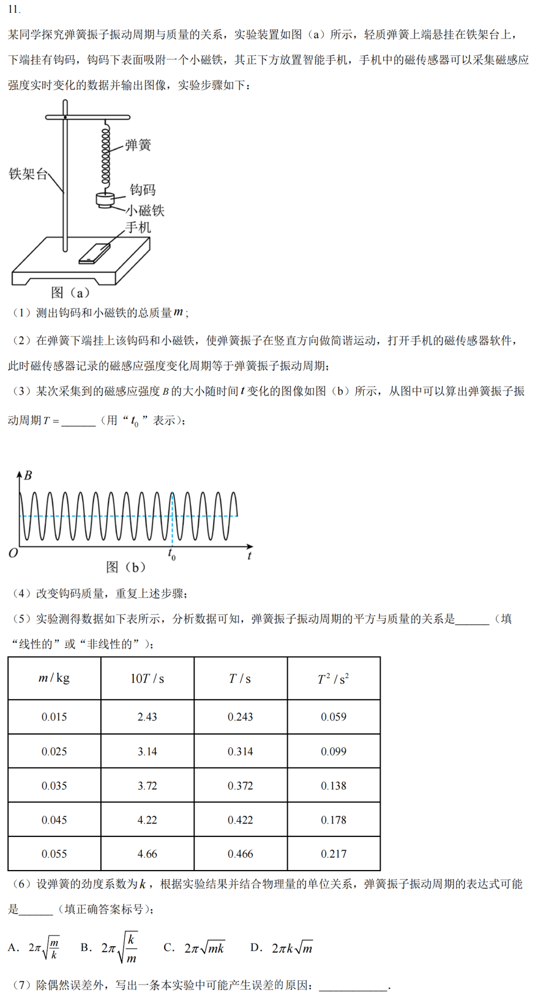
原始配图 1 · 原题及原图所用高中知识
周期计数；线性关系；单位检验；系统误差。
读题与思路
磁感应强度随磁铁位置重复，传感器图上的重复周期就是振动周期；多个周期平均可减小读时误差。
分步解析
- 从t=0到标记t₀，图中包含10个完整振动周期，所以T=t₀/10。注意数的是相邻同相位间隔，不是峰的个数。
- 表中T²/m约依次为3.93、3.96、3.94、3.96、3.95 s²/kg，接近常量，说明T²与m为线性关系。
- 弹簧劲度系数单位N/m=kg/s²，m/k单位为s²，故√(m/k)有时间单位，并且平方与m成正比。四个选项中只有A的2π√(m/k)符合。仅靠量纲不能推导2π，但可以结合给定选项辨认。
- 除偶然读数误差外，空气阻力会使振动偏离理想无阻尼模型；弹簧自身质量未忽略时也会影响理想“轻弹簧”模型。可写空气阻力。
答案
（3）t₀/10；（5）线性的；（6）A；（7）空气阻力的影响（合理系统误差原因之一）。
检查与易错点
单位检查可以排除形式不对的公式，不能单独确定没有单位的常数。读周期时数的是完整周期个数，不是波峰个数。
本题来源：paper · cross · drive-ref-1
返回三、非选择题（56分）
题目与已知条件
某探究小组利用半导体薄膜压力传感器等元件设计了一个测量微小压力的装置，其电路如图(a)所示，、、 为电阻箱， 为半导体薄膜压力传感器，C、D间连接电压传感器（内阻无穷大）。
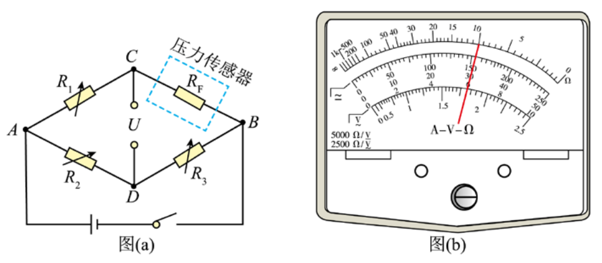
图(a)电桥与压力传感器；图(b)多用电表原刻度及指针，读数位置原样保留。（1）先用欧姆表“×100”挡粗测 的阻值，示数如图(b)所示，对应的读数是______Ω；
（2）适当调节 、、，使电压传感器示数为0，此时， 的阻值为______（用 、、 表示）；
（3）依次将0.5 g的标准砝码加载到压力传感器上（压力传感器上所受压力大小等于砝码重力大小），读出电压传感器示数 ，所测数据如下表所示：
| 次数 | 1 | 2 | 3 | 4 | 5 | 6 |
|---|
| 砝码质量 | 0.0 | 0.5 | 1.0 | 1.5 | 2.0 | 2.5 |
|---|
| 电压 | 0 | 57 | 115 | 168 | 220 | 280 |
|---|
根据表中数据在图(c)上描点，绘制 关系图线______；
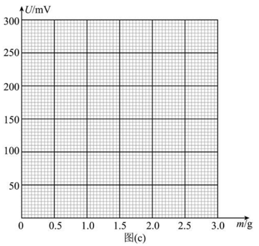
图(c)原空白作图网格：横轴m/g，0—3.0；纵轴U/mV，0—300。保留全部细格。（4）完成前面三步的实验工作后，该测量微小压力的装置即可投入使用。在半导体薄膜压力传感器上施加微小压力 ，电压传感器示数为200 mV，则 大小是______N（重力加速度取 ，保留2位有效数字）；
（5）若在步骤（4）中换用非理想毫伏表测量C、D间电压，在半导体薄膜压力传感器上施加微小压力 ，此时非理想毫伏表示数为200 mV，则 ______（填“>”“=”或“<”）。
查看原题图／原始配图
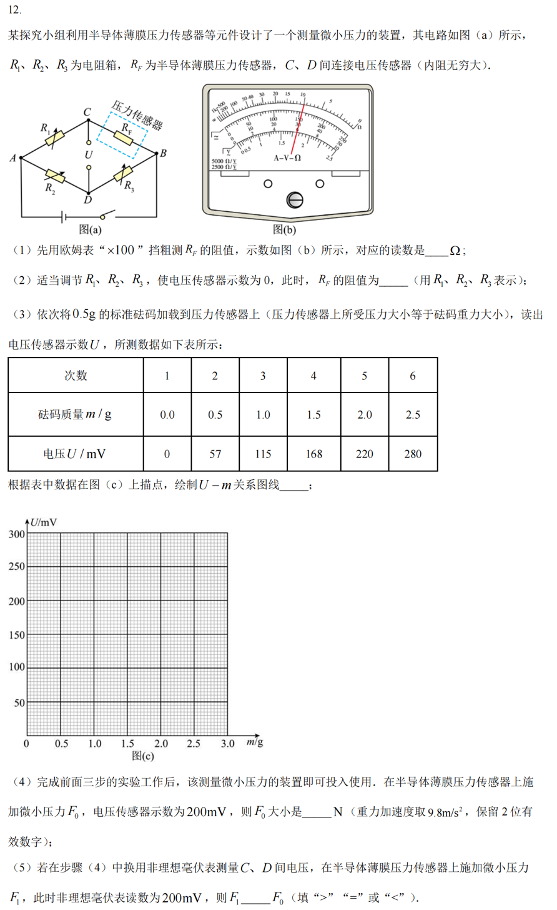
原始配图 1 · 原题及原图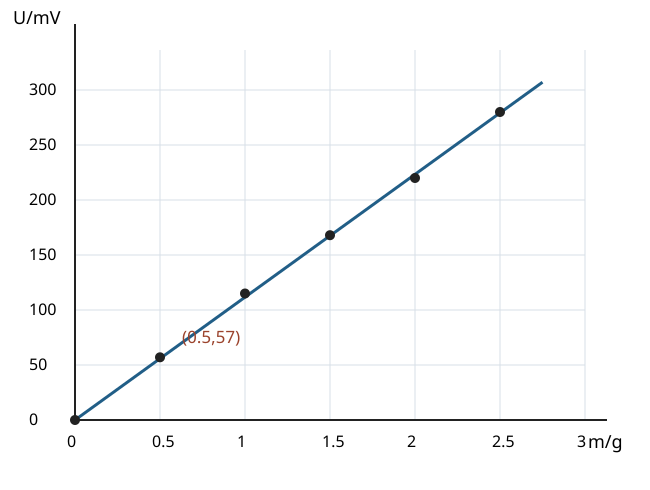
修订前解析配图 2 · 原创六点标定图所用高中知识
欧姆表读数；串联分压；电桥平衡；描点拟合；电压表负载影响。
读题与思路
先测初阻和调平衡，再用六个原始数据点标定。表中0.5 g对应57 mV，不能把它描成80 mV。
分步解析
- 欧姆表指针对应电阻刻度10，倍率×100，故RF=1000 Ω。欧姆表刻度非均匀，不能按电压刻度读取。
- C、D间电压为0时两点等势。上下两条支路串联分压给RF/(R₁+RF)=R₃/(R₂+R₃)。交叉相乘消去公共项，得RF=R₁R₃/R₂。
- 六点为(0,0)、(0.5,57)、(1.0,115)、(1.5,168)、(2.0,220)、(2.5,280)，单位g、mV。过原点画一条使各点分布均匀的直线，斜率约112 mV/g；用全六点过原点拟合得111.673 mV/g。原创六点标定图
- U=200 mV对应m≈200/111.673=1.791 g，因此F₀=1.791×10⁻³×9.8 N≈0.01755 N，保留2位有效数字约1.8×10⁻² N。手工作图的斜率读数略有差异，结果在1.7×10⁻²～1.8×10⁻² N之间都属合理。
- 用内阻有限的毫伏表接C、D后会有分流，使原来高电势点电势降低、低电势点电势升高，两点电势差缩小。这个结论可由两支路的电流关系和欧姆定律验证：若表电流i从C流向D，则UCD=UCD,空−i[R₁RF/(R₁+RF)+R₂R₃/(R₂+R₃)]。
- 所以同样压力下非理想表读数较小。要让非理想表仍读200 mV，需要更大的原空载电压，对应更大压力，F₁>F₀。
答案
（1）1000 Ω；（2）R₁R₃/R₂；（3）描点后作过原点的直线（图见解析）；（4）1.8×10⁻²（作图读数不同，1.7×10⁻²～1.8×10⁻²均合理）；（5）F₁>F₀。
检查与易错点
标定质量单位是g，换算力时须乘10⁻³。作图时应让各点均匀分布在直线两侧，不能把各点依次连成折线。
本题来源：paper · cross · drive-ref-1
返回三、非选择题（56分）
题目与已知条件
汽车刹车助力装置能有效为驾驶员踩刹车省力。如图，刹车助力装置可简化为助力气室和抽气气室等部分构成，连杆 与助力活塞固定为一体，驾驶员踩刹车时，在连杆 上施加水平力推动液压泵实现刹车。助力气室与抽气气室用细管连接，通过抽气降低助力气室压强，利用大气压与助力气室的压强差实现刹车助力。每次抽气时， 打开， 闭合，抽气活塞在外力作用下从抽气气室最下端向上运动，助力气室中的气体充满抽气气室，达到两气室压强相等；然后， 闭合， 打开，抽气活塞向下运动，抽气气室中的全部气体从 排出，完成一次抽气过程。已知助力气室容积为 ，初始压强等于外部大气压强 ，助力活塞横截面积为 ，抽气气室的容积为 。假设抽气过程中，助力活塞保持不动，气体可视为理想气体，温度保持不变。
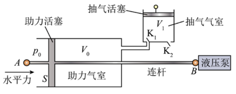
原刹车助力装置，保留V₀/V₁、K₁/K₂、AB连杆、助力活塞及液压泵。（1）求第1次抽气之后助力气室内的压强 ；
（2）第 次抽气后，求该刹车助力装置为驾驶员省力的大小 。
查看原题图／原始配图
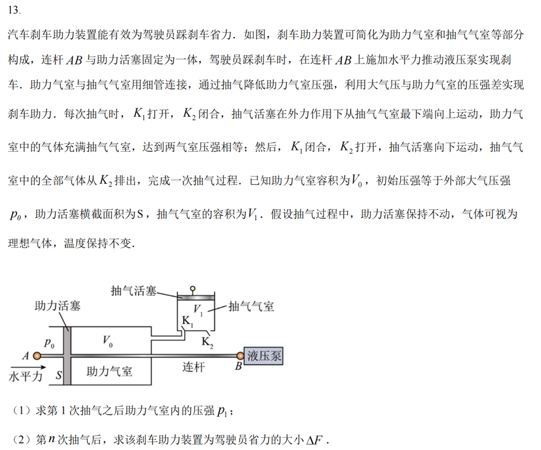
原始配图 1 · 原题及原图所用高中知识
等温气体状态变化；重复抽气；压强差与力。
读题与思路
每次抽气都把助力室中原有气体等温扩展到V₀+V₁，再排走抽气室中的那部分。
分步解析
- 第一次抽气前，助力室气体压强p₀、体积V₀。K₁开启、K₂关闭并拉起活塞后，气体占总体积V₀+V₁，压强相同。等温关系p₀V₀=p₁(V₀+V₁)，故p₁=p₀V₀/(V₀+V₁)。
- 关闭K₁后，助力室内保留体积V₀、压强p₁的气体；排气步骤不改变这部分气体。第二次抽气同理p₁V₀=p₂(V₀+V₁)。
- 令η=V₀/(V₀+V₁)，递推得pn=p₀ηn。活塞外侧是大气压p₀，内侧是pn，提供助力ΔF=(p₀−pn)S=p₀S[1−ηn]。
答案
（1）p₁=p₀V₀/(V₀+V₁)；（2）ΔF=p₀S[1−(V₀/(V₀+V₁))n]。
检查与易错点
抽气次数越多，室内压强越低，助力越大；极限不会超过p₀S。不能把每次抽走的气体质量当作相同，因为每次初压都在下降。
本题来源：paper · cross · drive-ref-1
返回三、非选择题（56分）
题目与已知条件
如图，两根足够长的光滑金属直导轨平行放置，导轨间距为 ，两导轨及其所构成的平面均与水平面成 角，整个装置处于垂直于导轨平面斜向上的匀强磁场中，磁感应强度大小为 。现将质量均为 的金属棒a、b垂直导轨放置，每根金属棒接入导轨之间的电阻均为 。运动过程中金属棒与导轨始终垂直且接触良好，金属棒始终未滑出导轨，导轨电阻忽略不计，重力加速度为 。
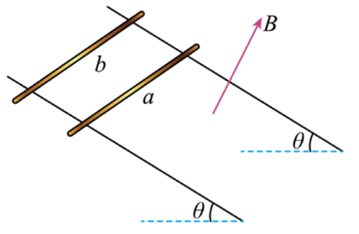
原倾斜双棒导轨图，a在下方、b在上方，磁场B垂直导轨平面向上。（1）先保持棒b静止，将棒a由静止释放，求棒a匀速运动时的速度大小 ；
（2）在（1）问中，当棒a匀速运动时，再将棒b由静止释放，求释放瞬间棒b的加速度大小 ；
（3）在（2）问中，从棒b释放瞬间开始计时，经过时间 ，两棒恰好达到相同的速度 ，求速度 的大小，以及时间 内棒a相对于棒b运动的距离 。
查看原题图／原始配图
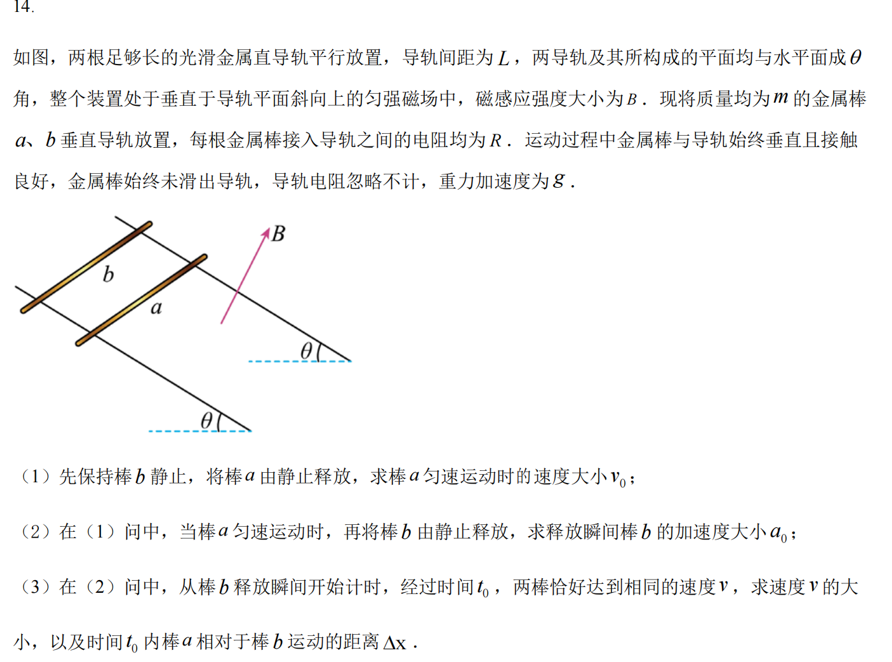
原始配图 1 · 原题及原图所用高中知识
动生电动势；双棒相对速度；整体动量定理；平均感应电流。
读题与思路
先固定b求a的稳定速度；释放b后安培力对两棒大小相等方向相反，用整体动量求共同速度，用电荷量求相对位移。
分步解析
- 第(1)问固定b时，回路总电阻为2R，感应电动势BLv₀，电流I₀=BLv₀/(2R)。a稳定时mg sinθ=BLI₀，故v₀=2mgR sinθ/(B²L²)。
- 释放b瞬间，速度还来不及变化，电流仍为I₀。b所受安培力沿斜面向下，与重力沿斜面分量同向，因此ma₀=mg sinθ+BLI₀=2mg sinθ，a₀=2g sinθ。
- 第(3)问按题设“t₀后共速”的高中理想化处理。对两棒整体沿斜面向下用动量定理，初动量mv₀，末动量2mv，外力为2mg sinθ，有2mv−mv₀=2mg sinθ·t₀，故v=g sinθ·t₀+v₀/2。
- 设这段时间安培力对a的反向冲量大小J，对b则为同向J。两棒动量方程为m(v−v₀)=mg sinθ·t₀−J、mv=mg sinθ·t₀+J。两式相减得J=mv₀/2。
- 两棒相对位移Δx使回路面积增加LΔx，磁通变化BLΔx。平均电流Ī=[BLΔx/t₀]/(2R)，安培力冲量J=BLĪt₀=B²L²Δx/(2R)。代入J得Δx=mv₀R/(B²L²)。整个过程只用平均电流和冲量，无需积分。
答案
（1）v₀=2mgR sinθ/(B²L²)；（2）a₀=2g sinθ；（3）v=g sinθ·t₀+v₀/2，Δx=mv₀R/(B²L²)。
检查与易错点
严格连续的理想模型中，速度差导致安培力，安培力再缩小速度差，二者通常渐近趋于共速；题干在有限t₀“恰好”共速属于教学近似。本题答案按给定t₀与近似共速前提求出，不把这一近似当作严格有限时刻结论。
本题来源：paper · cross · drive-ref-1
返回三、非选择题（56分）
题目与已知条件
如图，质量为 的匀质凹槽放在光滑水平地面上，凹槽内有一个半椭圆形的光滑轨道，椭圆的半长轴和半短轴分别为 和 ，长轴水平、短轴竖直。质量为 的小球，初始时刻从椭圆轨道长轴的右端点由静止开始下滑。以初始时刻椭圆中心的位置为坐标原点，在竖直平面内建立固定于地面的直角坐标系 ，椭圆长轴位于 轴上。整个过程凹槽不翻转，重力加速度为 。
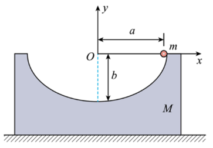
原半椭圆槽图，质量M，右端小球m，半长轴a、半短轴b，地面固定坐标xOy。（1）小球第一次运动到轨道最低点时，求凹槽的速度大小以及凹槽相对于初始时刻运动的距离；
（2）在平面直角坐标系 中，求出小球运动的轨迹方程；
（3）若 ，求小球下降 高度时，小球相对于地面的速度大小（结果用 、 及 表示）。
查看原题图／原始配图
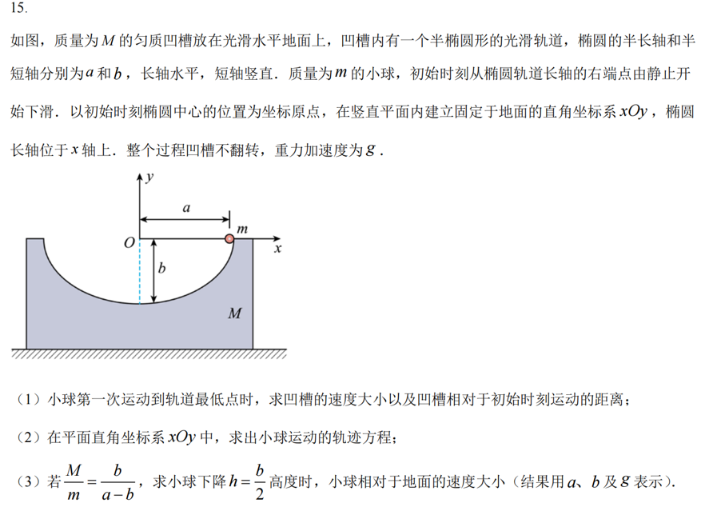
原始配图 1 · 原题及原图所用高中知识
水平动量守恒；机械能守恒；质心水平位置；轨迹的坐标变换。
读题与思路
地面对系统无水平外力，凹槽会反向移动。先区分小球相对凹槽轨迹与相对地面轨迹。
分步解析
- 小球第一次到最低点时速度水平向左，设大小u；槽速度向右为V。水平动量守恒给mu=MV，能量守恒给mgb=mu²/2+MV²/2。联立V=m√[2gb/(M(M+m))]。
- 设槽右移X，小球相对地面从a移到最低点X。水平质心不变：M X+mX=ma，故X=ma/(M+m)。槽运动距离在第一次到最低点前就是这个位移。
- 任意时刻小球地面坐标为(x,y)、槽右移X，则水平质心关系m(a−x)=MX，即X=m(a−x)/M。小球相对槽坐标为x−X，满足(x−X)²/a²+y²/b²=1。
- 代入并整理，得到[((M+m)x−ma)/(Ma)]²+y²/b²=1，必须取y≤0的下半支。其横向中心为ma/(M+m)，横半轴Ma/(M+m)。
- 若M/m=b/(a−b)，地面轨迹化为[x−(a−b)]²+y²=b²（y≤0）。这里圆心横坐标是a−b，括号必须保留。
- 下降b/2时y=−b/2，圆的半径与水平夹30°，切线与水平夹60°。若小球地面速率为v，其水平分速度大小v/2。动量守恒给MV=mv/2。
- 能量守恒mgb/2=mv²/2+MV²/2，代入V=mv/(2M)得v²=4Mgb/(4M+m)。再代入质量比得v=2b√[g/(a+3b)]。
答案
（1）V=m√[2gb/(M(M+m))]，槽右移距离ma/(M+m)；（2）[((M+m)x−ma)/(Ma)]²+y²/b²=1，y≤0；（3）v=2b√[g/(a+3b)]。
检查与易错点
系统竖直动量不守恒，因为受到地面支持力。全程机械能守恒应包含凹槽动能；地面轨迹的x−(a−b)不能写成x−a−b。
本题来源：paper · cross · drive-ref-1
题源与核验说明
- 2023.html旧版解析文件；SHA-256：cd2e0cb29ed7103703d6d2094ffc1cc1fb70bfa67ba914af3310734948d70ee6
- 2023年高考真题——物理（湖南卷） Word版含解析.doc所附参考资料；SHA-256：305eda55ba31e19c1f368adfe750fdfcbd6df795e7f492f5c97207f0931c25c6
- 2023年高考真题——物理（湖南卷） Word版含解析.doc所附参考资料；SHA-256：305eda55ba31e19c1f368adfe750fdfcbd6df795e7f492f5c97207f0931c25c6
- 2023年高考真题——物理（湖南卷） Word版无答案.doc所附参考资料；SHA-256：85157b9072e92cac911f262284412c837e20adcfbc331db2931a9ddda542f3c9
- 通通好课 2023湖南高考物理解析版原题同卷参考题本索引可访问，但预览图CDN未能取得；题文按中国教育在线完整题图与所附原卷核对，不把失败下载作为逐页核验证据。
- 中国教育在线 2023湖南物理试题及答案下载并目视对照中国教育在线wl00.png—wl09.png，覆盖1—15全部题文、原选项、图示和全部小问；第12题表内0.5g为57mV。试卷15题全部必答，无第16题或选考。11—15单题分值未见于所获题图，不猜补。